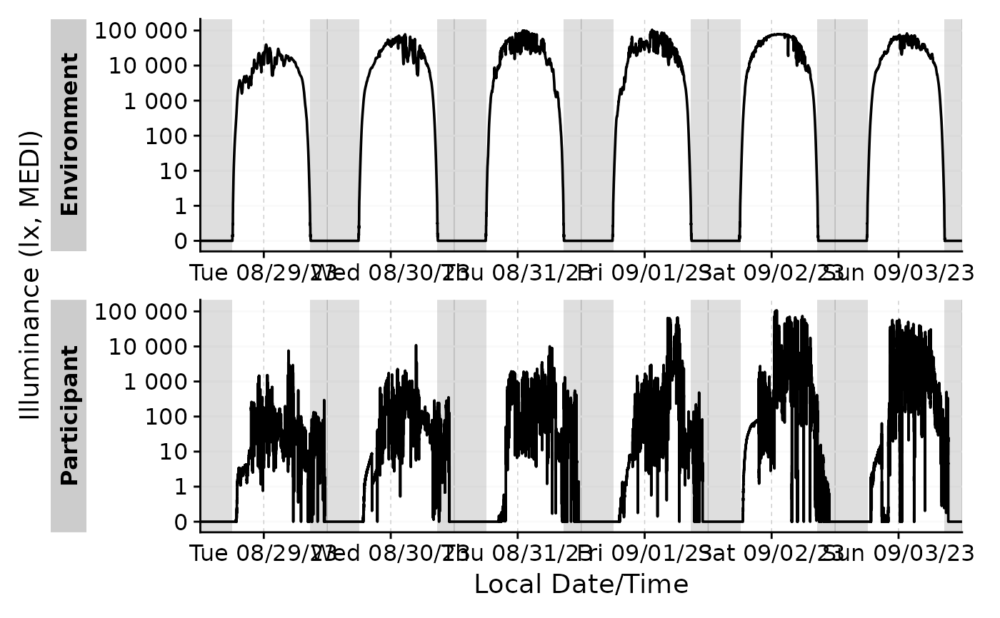

gg_photoperiod() is a helper function to add photoperiod information to
plots generated with gg_day() or gg_days(). The function can either draw
on the dawn and dusk columns of the dataset or use the coordinates and
solarDep arguments to calculate the photoperiods. For better visibility,
the
Usage
gg_photoperiod(
ggplot_obj,
coordinates = NULL,
alpha = 0.2,
solarDep = 6,
on.top = FALSE,
...
)Arguments
- ggplot_obj
- coordinates
A two element numeric vector representing the latitude and longitude of the location. If
NULL, the default, the function will look for thedawnandduskcolumns in the dataset. If those are not present, (and in thePOSIXctformat), the function will stop with an error. Further, ifNULL, thesolarDepargument will be ignored.- alpha
A numerical value between 0 and 1 representing the transparency of the photoperiods. Default is 0.2.
- solarDep
A numerical value representing the solar depression angle between 90 and -90. This means a value of 6 equals -6 degrees above the horizon. Default is 6, equalling
Civil dawn/dusk. Other common values are 12 degrees forNautical dawn/dusk, 18 degrees forAstronomical dawn/dusk, and 0 degrees forSunrise/Sunset. Note that the output columns will always be nameddawnanddusk, regardless of thesolarDepvalue.- on.top
Logical scalar. If
TRUE, the photoperiods will be plotted on top of the existing plot. IfFALSE, the photoperiods will be plotted underneath the existing plot. Default isFALSE.- ...
Additional arguments given to the
ggplot2::geom_rect()used to construct the photoperiod shading. Can be used to change the fill color or other aesthetic properties.
Details
If used in combination with gg_doubleplot(), with that function in the
type = "repeat" setting (either manually set, or because there is only one
day of data per group present), photoperiods need to be added separately
through add_photoperiod(), or the second photoperiod in each panel will be
off by one day. See the examples for more information.
In general, if the photoperiod setup is more complex, it makes sense to add it prior to plotting and make sure the photoperiods are correct.
See also
Other photoperiod:
photoperiod()
Examples
coordinates <- c(48.521637, 9.057645)
#adding photoperiods to a ggplot
sample.data.environment |>
gg_days() |>
gg_photoperiod(coordinates)

#adding photoperiods prior to plotting
sample.data.environment |>
add_photoperiod(coordinates, solarDep = 0) |>
gg_days() |>
gg_photoperiod()
 #plotting photoperiods automatically works for both gg_day() and gg_days()
sample.data.environment |>
gg_day() |>
gg_photoperiod(coordinates)
#plotting for gg_doubleplot mostly works fine
sample.data.environment |>
filter_Date(length = "2 days") |>
gg_doubleplot() |>
gg_photoperiod(coordinates)
#however, in cases where only one day of data per group is available, or the
#type = "repeat" setting is used, the photoperiods need to be added
#separately. Otherwise the second day will be off by one day in each panel.
#The visual difference is subtle, and might not be visible at all, as
#photoperiod only every changes by few minutes per day.
#WRONG
sample.data.environment |>
filter_Date(length = "1 days") |>
gg_doubleplot() |>
gg_photoperiod(coordinates)
#CORRECT
sample.data.environment |>
filter_Date(length = "1 days") |>
add_photoperiod(coordinates) |>
gg_doubleplot() |>
gg_photoperiod()
#plotting photoperiods automatically works for both gg_day() and gg_days()
sample.data.environment |>
gg_day() |>
gg_photoperiod(coordinates)
#plotting for gg_doubleplot mostly works fine
sample.data.environment |>
filter_Date(length = "2 days") |>
gg_doubleplot() |>
gg_photoperiod(coordinates)
#however, in cases where only one day of data per group is available, or the
#type = "repeat" setting is used, the photoperiods need to be added
#separately. Otherwise the second day will be off by one day in each panel.
#The visual difference is subtle, and might not be visible at all, as
#photoperiod only every changes by few minutes per day.
#WRONG
sample.data.environment |>
filter_Date(length = "1 days") |>
gg_doubleplot() |>
gg_photoperiod(coordinates)
#CORRECT
sample.data.environment |>
filter_Date(length = "1 days") |>
add_photoperiod(coordinates) |>
gg_doubleplot() |>
gg_photoperiod()